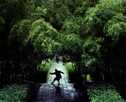

Ji ben gong, rozciąganie, siła i wytrzymałość, broń tradycyjna oraz bezpieczeństwo
Aktualizacja: 2026-06
Trening Shaolin to przede wszystkim cierpliwa praca nad podstawami. Zanim pojawią się efektowne formy i broń, adept buduje siłę nóg, gibkość, wytrzymałość i nawyk regularności. Ten rozdział pokazuje, jak wygląda fundament treningu, jak budować kondycję oraz jak ćwiczyć bezpiecznie, gdy uczymy się samodzielnie.

Lata praktyki: stójki, kopnięcia i hartowanie ciała.
Ji ben gong (基本功) to „praca nad podstawami" — zestaw fundamentalnych, mocno powtarzalnych ćwiczeń, które są szkieletem każdego treningu Shaolin. To one budują ciało gotowe do nauki technik i form. Kluczem jest tu powtarzalność i jakość pojedynczego ruchu.
| Ćwiczenie | Na czym polega | Co rozwija |
|---|---|---|
| Stójki na czas | Utrzymywanie mabu, gongbu i innych stójek przez określony czas. | Siła i wytrzymałość nóg, stabilność, cierpliwość. |
| Kopnięcia w miejscu | Powtarzanie kopnięć (frontalne, boczne, wymachy) w seriach, bez przemieszczania. | Technika, gibkość, kontrola i równowaga. |
| Praca nóg / kroki | Przejścia między stójkami, kroki w przód i w tył, zmiany kierunku. | Płynność, koordynacja, mobilność w stójkach. |
| Powtarzanie pojedynczych technik | Wielokrotne, świadome powtarzanie uderzeń i bloków. | Utrwalenie wzorca ruchu w „pamięci ciała". |
Kopnięcia, niskie stójki i formy wymagają gibkości — zwłaszcza w biodrach, nogach i kręgosłupie. Pracę nad mobilnością prowadzi się systematycznie i ostrożnie, zawsze po rozgrzewce, gdy mięśnie są rozgrzane.
Shaolin tradycyjnie kładzie nacisk na ćwiczenia z masą własnego ciała oraz hartowanie. Celem jest ciało jednocześnie silne, wytrzymałe i odporne — zdolne do długiego, intensywnego wysiłku.
| Obszar | Przykładowe ćwiczenia |
|---|---|
| Siła górnej części ciała | Pompki (różne warianty), praca w podporze. |
| Siła nóg | Przysiady, niskie stójki na czas, wykroki. |
| Mięśnie brzucha / core | Ćwiczenia brzucha, deska (plank), stabilizacja tułowia. |
| Wytrzymałość | Powtarzalne serie technik, dłuższe formy, praca interwałowa. |
| Hartowanie | Stopniowe przyzwyczajanie ciała do obciążeń i kontaktu (ostrożnie, z progresją). |
Po opanowaniu pracy „gołych rąk" (quan) adepci sięgają po broń tradycyjną — to wyższy etap treningu. Broń traktuje się jak „przedłużenie ciała": wymaga ona jeszcze lepszej kontroli, koordynacji i wyczucia dystansu. Cztery klasyczne bronie Shaolin to:
| Broń | Charakterystyka |
|---|---|
| Kij (棍, gun) | Długa broń drzewcowa; często pierwsza w nauce. Uczy zasięgu, pracy obu rąk i dynamiki — uważany za „przodka" broni długiej. |
| Włócznia (槍, qiang) | Długie drzewce z grotem; precyzyjne pchnięcia i koliste ruchy. Nazywana „królem broni długiej". |
| Miecz prosty (劍, jian) | Obosieczny, lekki i precyzyjny; płynne, eleganckie techniki — „dżentelmen wśród broni". |
| Szabla (刀, dao) | Jednosieczna, zakrzywiona; mocne cięcia i zamaszyste ruchy — „dowódca wśród broni krótkiej". |
Trening w domu czy na własną rękę jest możliwy, ale wymaga rozsądku i progresji. Najwięcej kontuzji bierze się z pomijania rozgrzewki, zbyt szybkiego przeskakiwania do trudnych technik oraz braku kogoś, kto skoryguje błędy.